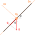
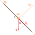

Gravity compensation for accelerometer
Gravity compensation for accelerometer
This solution is only for normal mount of sensor package, see figure:
When we read accelerometer values, we get measurements with Earth gravity. How to remove gravity amount?
Gravity is the vector in direction to center of Earth. Accelerometer values (for Ox, Oy, Oz axis) contains gravity vector's projections (projection, because of tilt of sensor: sensor can have pitch and roll angles not equals to 0!). We need to remove gravity projections to get clear values of acceleration.
The figure shows normal mount of the sensor and it's axis. First let's remove gravity projection from accelerometer value for Ox axis. When no tilt and roll, pitch angles are 0 - gravity projections on Ox and Oy are 0. But if we have some tilt, then we have also "gravity component" in accelerometer measurement value: Gx. See a figure for Gx definition:

Projection gx = g * cos q. Angle p is the pitch angle. q = 180° - 90° - p = 90° - p.
So, gx = g / cos (90° - p) = g / sin p. Let's define gravity component on Oy axis. See the figure:

Projection gy = g / cos b. Angle r is the roll angle. b = 180° - 90° - r = 90° - r. So, gy = g / cos (90° - r) = g * sin r.
Let's define gravity component on vertical, Oz axis.
Projection gz has some unknown angle v between Oz and vector of gravity g. And how to define this angle v? It's easy: we know the theorem about orths: cos2p + cos2r + cos2v = 1.
And gz = g * cos v. We need to find cos v. From this theorem: cos2v = 1 - (cos2p + cos2r).
We know that cos2x = 0.5 / (1 + cos2x) so, cos2v = 1 - (0.5/(1 + cos2p) + 0.5/(1 + cos2r)) = -0.5 / (cos2r + cos2p).
And now:
cos v = ± SQRT(-0.5 / (cos2p + cos2r)) = ± 0.70710678118654752440 / SQRT(-(cos2p + cos2r)). So, we will use gz = g / 0.70710678118654752440 / SQRT(cos2p + cos2r) with correction of sign (direction of gz) by pitch/roll amounts.
These formulas are in g units, not in m/sec2! We suppose |g| = 1. So, you need to multiply by g constant (9.8). But more correct may be to use |g| = sqrt(Accx2 + Accy2 + Accz2) instead of 1.
Here is the example in C:
#define DEG2RAD(D) ((D)*0.01745329251994329576) typedef struct accv_t { double v[3]; // values of 3 axis of accelerometer } accv_t; accv_t corr_gravity(double ax, double ay, double az, double pitch, double roll) { /* XXX: for normal mount!!! Other not implemented */ double gx, gy, gz, tmp; gx = sin(DEG2RAD(pitch)); gy = sin(DEG2RAD(roll)); tmp = cos(DEG2RAD(2*pitch)) + cos(DEG2RAD(2*roll)); gz = 0.70710678118654752440 * sqrt(fabs(tmp)); ax += gx; ay += gy; if (fabs(pitch) > 90.0 || fabs(roll) > 90.0) { az -= gz; } else { az += gz; } return ((accv_t){ .v = {ax, ay, az}}); }
NOTE: condition abs(pitch) > 90° || abs(roll) > 90° => invert gz.
On real accelerometer values I got:
sensor: Ax = 0.287g Ay = -0.094g Az = -0.928g corrected: Ax = -0.006g Ay = 0.006g Az = 0.022g